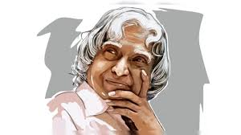

Dr. A.P.J.
Abdul Kalam

About the Legend
- Full Name and Birth: Dr. Avul Pakir Jainulabdeen Abdul Kalam was born on October 15, 1931, in Rameswaram, Tamil Nadu, India.
- Education: He graduated in Physics from St. Joseph's College, Tiruchirappalli, and later studied Aerospace Engineering at the Madras Institute of Technology (MIT).
- Missile Man of India: Dr. Kalam played a pivotal role in India's civilian space program and military missile development, earning him the nickname "Missile Man of India."
- ISRO Contributions: He was instrumental in developing the Polar Satellite Launch Vehicle (PSLV) and the SLV-III projects at the Indian Space Research Organisation (ISRO).
- Defense Research and Development Organization (DRDO): Dr. Kalam worked with DRDO and was involved in the development of the Agni and Prithvi missiles.
- Pokhran-II Nuclear Tests: He played a crucial role in the Pokhran-II nuclear tests in 1998, which established India as a nuclear power.
- President of India: Dr. Kalam served as the 11th President of India from 2002 to 2007. He was known as the "People's President" due to his popularity and accessibility.
- Vision 2020: He advocated for the development of India into a knowledge superpower and a developed nation by the year 2020 through his Vision 2020 plan.
- Educator and Author: After his presidency, he became a visiting professor at various institutions. He authored several books, including "Wings of Fire," "Ignited Minds," and "India 2020."
- Awards and Honors: Dr. Kalam received numerous awards, including the Bharat Ratna (India's highest civilian honor), Padma Bhushan, and Padma Vibhushan.
- Youth Inspiration: He was a motivational speaker and inspired millions of young Indians through his speeches and writings, emphasizing the importance of education and dreaming big.
- Enduring Legacy: Dr. Kalam's birthday, October 15, is observed as World Students' Day by the United Nations in recognition of his efforts in promoting education.
- Humble Beginnings: He came from a modest background, with his father being a boat owner and imam of a local mosque, which instilled in him the values of hard work and humility.
- Death: Dr. Kalam passed away on July 27, 2015, while delivering a lecture at the Indian Institute of Management Shillong, doing what he loved best—interacting with students.
- Global Influence: His life and work continue to inspire people not only in India but around the world, making him a global icon of dedication, perseverance, and visionary leadership.